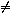

|
|
The Object Centered Language Manual
|
For example, a description of a blocks world (all examples are in "blocks world" unless specified), might be:
This domain contains blocks, a table and a gripper. One block can be on a table, be gripped by the gripper, or on another block. A block can have either zero or one blocks ontop of it. If it has no other block on it, it has a clear top. The blocks can only be moved by the gripper. The gripper can only move one block at one time, and it can only move a block which has a clear top. It can put the block it is gripping on the table or on a block with a clear top. The table is big enough to put all the blocks on.Back to Top
objects(block, [b1,b2,b3]). objects(gripper, [g]).Back to Top
For the above example, the predicates we choose are on_block(block, block), on_table(block), clear(block), gripped(block,gripper), free(gripper) and busy(gripper). These predicates must be chosen to match the kinds of goals that a user of the planner might want to pose.
At this point we must make a decision as to which sorts are dynamic and which are static. Naturally, if the description, status or position etc of an object may change during plan execution, then it is dynamic. Since we have not chosen to describe the state of the table with dynamic predicates, it sensible to define it a static sort. The sorts block and gripper have several different predicates, that means they can have different state, so they are both dynamic sorts (note, however, that choice of dynamic/static status for sorts may not always be obvious).
blocks world, they could be defined (as already
stated above in section 2):The substate class expressions for an object of sort block could be:
substate_classes(block, B,[
[gripped(B,G)],
[on_block(B,B1), clear(B),ne(B,B1)],
[on_block(B,B1),ne(B,B1)],
[on_table(B), clear(B)],
[on_table(B)] ]).
To validate these classes, we check that every legal instantiation
of each of the lists of predicates is a valid substate,
and every required substate is some instantiation of a predicate
list. Note that the development of these classes should happen
in parallel with operator definition - since objects are
assumed to change state from one class to another under the
execution of an operator.
There is no need for atomic invariants in the usual versions of the
"blocks world", so we describe it as an empty list.
atomic_invariants([]).There are static facts however, such as "
ne(b1,b2)",
that are true implicitly.
If the world was elaborated further by the
introduction of new objects,
then atomic invariants would be needed e.g.:
objects(colour,[blue,red]).
predicates([
......
has_colour(block, colour),
smaller(block,block)]).
atomic_invariants([has_colour(b1,red),
has_colour(b2,blue),
smaller(b1,b2),
smaller(b2,b3) ]).
S, such that no grounding of S can be
satisfied by a valid planning state.For example:
inconsistent_constraint([on_block(B1,B2),on_block(B1,B3),ne(B2,B3)]).expresses the constraint that a block cannot be on top of two different blocks at the same time. Sometimes, as in this example, constraints are implicit in the substate class definitions and are therefore redundant. Constraints that are not redundant generally involve more than one sort; for example, in a robot domain one might have:
inconsistent_constraint([grips(Robot1,Key1),in(Key1,Room),
in(Robot1,Room1),ne(Room1,Room)])
This restricts the legal world states so that robots cannot grip keys which
are in a separate room. Currently, the only use made of inconsistent constraints
is in some of OCL's preprocessing tools, such as the automatic task
generator and the goal order generator.
For example, in the "robot world" with more than one robot
let us represent the action "push a box to a door":
There must be a robotSo the prevail condition is:Tin roomRoom1, it next to a boxB, and after the action,Twill stay in theRoom1and still be next toB.
[se(robot,T,[robot_in(T,Room1),robot_next_box(T,B)])]
Before this action, the required state of boxSo the necessary change is:Bis that it must inRoom1.After the action,
Bis inRoom1and near some doorDoor1, such thatDoor1must satisfy the constraint that it connectsRoom1to some other roomR(henceDoor1's instantiation is restricted to sensible values).
[sc(box,B,[box_in(B,Room1)] =>
[box_in(B,Room1),box_near_door(B,Door1,Room1),
connect(Room1,R,Door1)])]
For all the other objects, if they are next to box $B$ before the operator executes, then after execution of the operator they will not be next to the box any longer.So the conditional changes are:
[sc(robot,D,[robot_in(D,Room1),robot_next_box(D,B)]
=>[robot_in(D,Room1)]),
sc(box,B1,[box_in(B1,Room1),box_next_box(B1,B)]
=>[box_in(B1,Room1)]),
sc(key,Key1,[key_on_floor(Key1,Room1),key_next_box(Key1,B)]
=>[key_on_floor(Key1,Room1)])]
Conditional changes are universally quantified over all objects
in the sorts affected, with the exception that objects affected by the
necessary changes are exempt from the conditional changes. Hence, the first
condition above would change the substate of all robots D
such that D  T.
As a whole, the format is:
operator(pushtodoor(T,B,Door1,Room1),
% prevail
[se(robot,T,[robot_in(T,Room1),robot_next_box(T,B)])],
% necessary
[sc(box,B,[box_in(B,Room1)] =>
[box_in(B,Room1),box_near_door(B,Door1,Room1),
connect(Room1,R,Door1)])],
% conditional
[sc(robot,D, [robot_in(D,Room1),robot_next_box(D,B)]
=> [robot_in(D,Room1)]),
sc(box,B1,[box_in(B1,Room1),box_next_box(B1,B)]
=> [box_in(B1,Room1)]),
sc(key,Key1,[key_on_floor(Key1,Room1),key_next_box(Key1,B)]
=> [key_on_floor(Key1,Room1)])
]) .
Back to Top
|
|